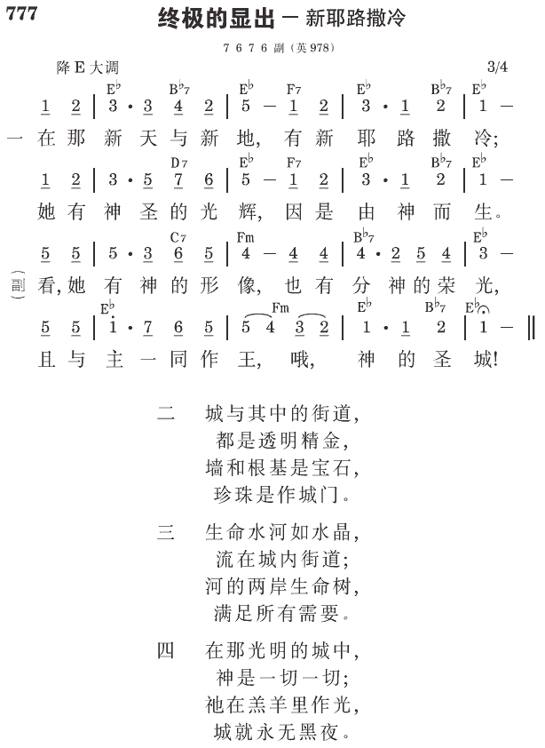

启21:2 我又看见圣城新耶路撒冷由神那里从天而降，预备好了，就如新妇妆饰整齐，等候丈夫。
圣经中全部神圣启示的终极完成
新耶路撒冷乃是圣经中全部神圣启示的终极完成。圣经六十六卷书的结纶包含在启示录论到新耶路撒冷的末了两章中。新耶路撒冷乃是六十六卷书终极的结果。圣经六十六卷书中所包含许许多多的事物，将来只完成于一个项目─新耶路撒冷。圣经中一切积极的事物只有一个结果─新耶路撒冷 （《神新约的经纶》三四六页）。
不是一座物质的城
启示录是用表号的方式写的。你若说末了一个表号─新耶路撒冷─是物质、真正的城，那么这卷书的第一个表号─灯台─又如何？一章的七星是真正的星么？羔羊如何？你相信作神羔羊的基督，是有四条腿、一条小尾巴的真羊羔么？犹大支派的狮子是像动物园中的真狮子么？这样解释启示录的这些表号是不合逻辑的。新耶路撒冷是一个表号，不是真正、实际、物质的城；大巴比伦也是假召会的表号。大巴比伦和新耶路撒冷乃是启示录末了的两个表号。一座城是假召会的表号，另一座城─圣城，表征纯正召会的终极总结。大巴比伦称为大妓女，新耶路撒冷称为羔羊的妻。既然启示录是一卷用表号写的书，新耶路撒冷就不能例外；它必定是个表号（《长老训练㈡主恢复的异象》六一至六二页）。
乃是一个生机的构成
新耶路撒冷是所有旧约及新约时代得重生之圣徒的一个组合，他们凭着神建造在一起，作神永远的建筑；新耶路撒冷也是所有蒙救赎、重生、变化、并得荣之三部分人，与经过过程、终极完成之三一神的调和。在成为肉体、钉死和复活里，三一神已经经过过程并终极完成，与人，就是祂所拣选的人成为一。历经神各时代里许多的世代，三部分的人已经蒙救赎、重生、变化并得荣，要与在已过的永远里拣选他们作祂配偶、住处、并彰显的三一神，在将来的永远里成为一。
除此以外，新耶路撒冷将是经过过程、终极完成之三一神的终极显出，使祂在永世里，在得重生、变化、并得荣的人性里得着彰显（新约总论第八册，一六六页）。
参读：《神新约的经纶》第二十六章；《长老训练㈡主恢复的异象》第五至十三章；《新约总论》第二五四至二六四篇；《新耶路撒冷的解释应用于寻求的信徒》第一章。
